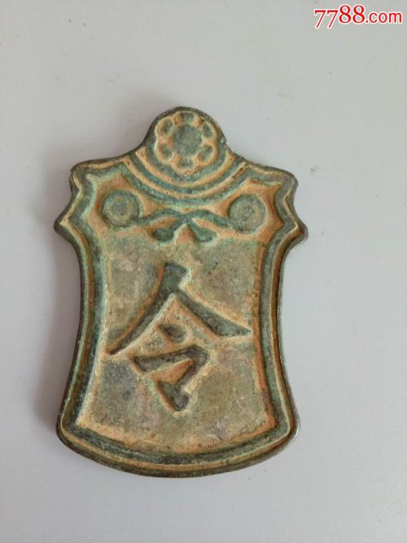
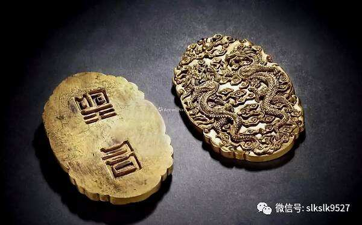
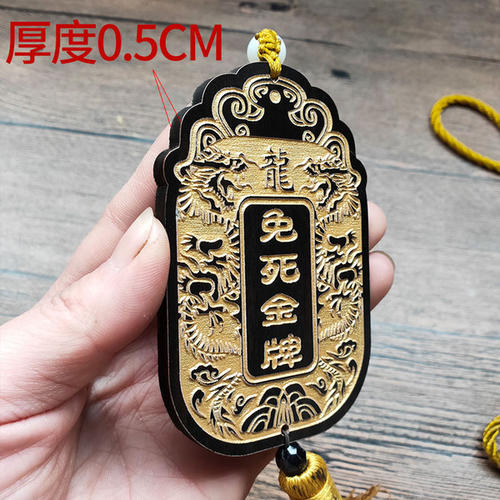
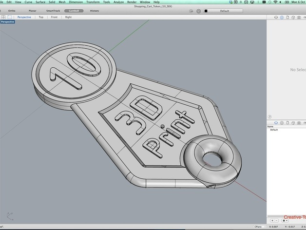
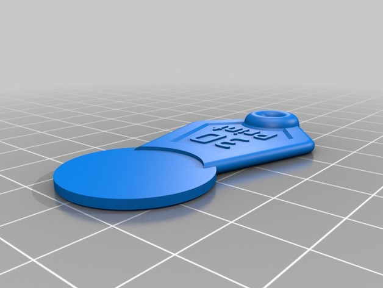
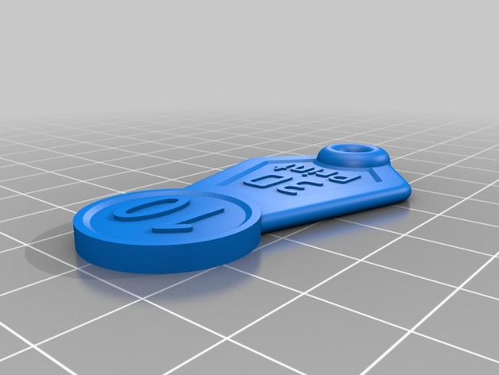
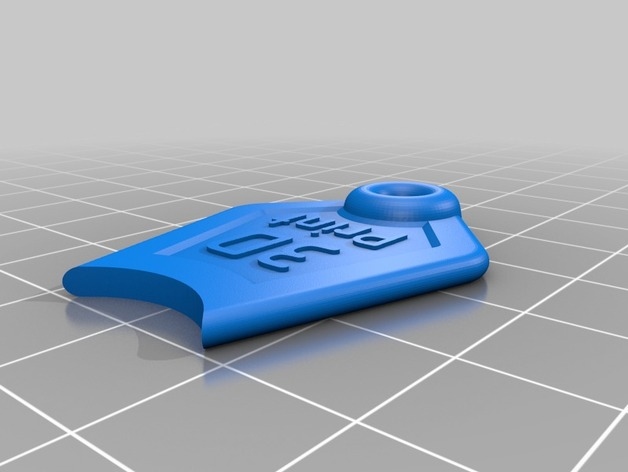

Phase1 -- A Tempest in a Teapot


Old Chinese Palace Dynasty Ancient Text Amulet Token
  
The tokens carried by ancient Chinese （before 1949）officials in daily life are equivalent to today's Identify cards, passes, and death proofs, and so on.
A version of this artifact on Thingiverse.com
I can't find any text token like the old Chinese token, but this one is the most similar one.
  